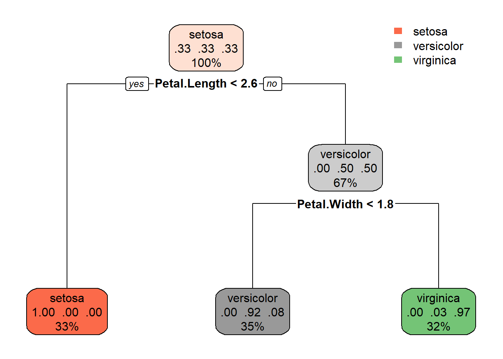

5 Decision Trees and Bagged Trees
In this lecture we will learn about decision trees and bagged trees for classification or regression models. As in the previous lecture, we will use the tidymodels framework (Kuhn and Wickham 2020). If you have not installed tidymodels, this can be done by
install.packages("tidymodels")This lecture is highly inspired by the data camp course Machine learning with three based models in R (see link at the buttom).
We start with decision trees.
5.1 Decision trees
A decision tree is a classifier that can be represented as a flow chart that looks like a tree. In each prediction, we start at the root asking a question deciding to which branch we should go for the prediction. As an example, say we want to predict whether or not a person likes computer games and make a decision tree for solving that problem. We have illustrated such a tree below. First you must ask: Is the person younger than 15 years old? If yes, predict that the person likes computer games. If the answer is no, is the person a boy? If yes, predict YES, he likes computer games, or if no, then NO, she does not like computer games.

(#fig:decisiontree_computergames)A simple decision tree
In the illustration we have tried to make the decision tree “grow from the ground-up,” but it is most common to print them the other way around.
The pros of decision trees are:
- Easy to explain and intuitive to understand
- Possible to capture non-linear relationships
- Require no standardization or normalization of numeric features
- No need for dummy variables for categoric features
- Robust to outliers
- Fast for large datasets
- Can be used for regression and classification
The cons are:
- Hard to interpret if large, deep, or ensembled
- High variance, complex trees are prone to overfitting
To set up a tidymodels decision tree, we start by loading the package
library(tidymodels)To make a decision tree, there are three elements we need. First a decision tree object, then the engine and finally the mode.
tree_spec <- decision_tree() %>%
set_engine("rpart") %>%
set_mode("classification")Here decision_tree() makes the decision tree object. There are different packages we can use for decision trees, but we select a package called rpart, which is a package for recursive partitioning. This is called the engine in the tidymodels framework. Finally, we must decide if we are to do classification or regression, and this is the mode. Here we use classification.
The tree_spec object is just a skeleton, we need data to make it useful. For example purposes, let use the same data as in lecture 4 (the iris data).
library(tidyverse)
df <- as_tibble(iris)
set.seed(999)
split <- initial_split(df, strata = Species)
df_train <- training(split)
df_test <- testing(split)Then we are ready to fit a decition tree to our training data. You will notice the procedure is very similar to the procedure we used in lecture 4. This is the largest benefit of using tidymodels.
tree_fit <- tree_spec %>%
fit(Species ~., data = df_train)
tree_fit## parsnip model object
##
## n= 111
##
## node), split, n, loss, yval, (yprob)
## * denotes terminal node
##
## 1) root 111 74 setosa (0.33333333 0.33333333 0.33333333)
## 2) Petal.Length< 2.6 37 0 setosa (1.00000000 0.00000000 0.00000000) *
## 3) Petal.Length>=2.6 74 37 versicolor (0.00000000 0.50000000 0.50000000)
## 6) Petal.Width< 1.75 39 3 versicolor (0.00000000 0.92307692 0.07692308) *
## 7) Petal.Width>=1.75 35 1 virginica (0.00000000 0.02857143 0.97142857) *Using the rpart.plot package, we can visualize the decision tree we have fitted by
library(rpart.plot)
rpart.plot(tree_fit$fit,roundint=FALSE)
So, to make a prediction, the decision tree asks first: “Is the petal length below 2.6?” If yes, predict Setosa. If no: “Is the petal width below 1.75 (rounded off to 1.8 in the illustration)?” If the answer is yes, it is a vercicolor and a virginica if no.
We can also make predictions on the test set and calculate the accuracy
tree_fit %>%
predict(df_test) %>% # predict on the test set
bind_cols(df_test) %>% # bind columns (adding the truth and covariates)
metrics(truth = Species, estimate = .pred_class) # calculate metrics## # A tibble: 2 x 3
## .metric .estimator .estimate
## <chr> <chr> <dbl>
## 1 accuracy multiclass 0.949
## 2 kap multiclass 0.923and the confusion matrix
tree_fit %>%
predict(df_test) %>% # predict on the test set
bind_cols(df_test) %>% # bind columns (adding the truth and covariates)
conf_mat(truth = Species, estimate = .pred_class) # confusion matrix## Truth
## Prediction setosa versicolor virginica
## setosa 13 0 0
## versicolor 0 13 2
## virginica 0 0 11If you remember from the last lecture, this is the same result as we got using knn and naive bayes.
5.2 Bagged trees
Bagged threes is an ensemble method. This means, instead of fitting just one decision tree, we fit many, and aggregate the predictions from all of them to improve our final prediction. Bagging is short for bootstrap aggregation. Bootstrap is a method for resampling that we use on the training set to get many training sets with the same properties as the original one. We sample random rows of the training set with replacement to make these bootstrapped datasets and fit a decision tree to each of these.
(#fig:bagged_ensemble)A bagged tree
This will give us many predictions that we then aggregate to arrive at our bagged prediction. If we are in a regression setting, the aggregated prediction is simply the mean, while in a classification setting the majority vote becomes the final prediction. Bagging can reduce the variance of our prediction significantly.
(#fig:bagged_ensemble_pred)A bagged tree prediction
Let us fit a bagged tree to the iris data. Here we need to install an additional package called baguette.
install.packages("baguette")This package contains the function bag_tree that we will use in our model spec.
library(baguette)
bag_spec <- bag_tree() %>%
set_engine("rpart", times = 100) %>%
set_mode("classification")As you have learned by now, the structure is the same, but notice in the engine specification we have set times = 100. This is how we specify how many trees we want to include in our bag.
set.seed(123)
bag_fit <- bag_spec %>%
fit(Species ~., data = df_train)
bag_fit## parsnip model object
##
## Bagged CART (classification with 100 members)
##
## Variable importance scores include:
##
## # A tibble: 4 x 4
## term value std.error used
## <chr> <dbl> <dbl> <int>
## 1 Petal.Length 66.8 0.320 100
## 2 Petal.Width 66.7 0.277 100
## 3 Sepal.Length 48.2 0.489 100
## 4 Sepal.Width 27.9 0.487 100In the output, we see the variable importance scores. As you can see the Petal.Length is the most important covariate.
We can also make predictions on the test set and calculate the accuracy
bag_fit %>%
predict(df_test) %>%
bind_cols(df_test) %>%
metrics(truth = Species, estimate = .pred_class) ## # A tibble: 2 x 3
## .metric .estimator .estimate
## <chr> <chr> <dbl>
## 1 accuracy multiclass 0.949
## 2 kap multiclass 0.923and the confusion matrix
bag_fit %>%
predict(df_test) %>%
bind_cols(df_test) %>%
conf_mat(truth = Species, estimate = .pred_class) ## Truth
## Prediction setosa versicolor virginica
## setosa 13 0 0
## versicolor 0 13 2
## virginica 0 0 11It seems this is the best we can do with the data that we have - same result as for knn, naive bayes and a simple decision tree.
On data camp you will learn more about decision trees and bagged trees - also how to use them in a regression setting.
Data camp
We highly recommend the data camp course Machine Learning with Tree-Based Models in R chapters 1-3.